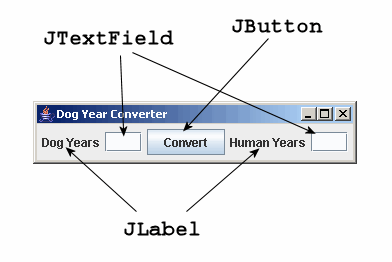

GUI 5 - Dog Years - GUI only
- Create a JTextField.
- Create a JButton.
- Add more than one component to the layout.
JTextFieldJTextField(width) // ConstructorJButtonJButton(title) // Constructor
What the DogYears example is about
Dog years? We'll work on a really simple problem -- converting a dog's age into an "equivalent" human age. The logic of the problem (multiplying by 7) is trivial so that we can concentrate on building the GUI.
This lesson shows how to build a graphical user interface, but it doesn't connect the button to a listener method which does the calculation. That comes in the next lesson.
Instance variables
When you are designing your own classes to implement the logic of a
problem, the purpose of instance variables(fields) is to save the state
that the objects represent. Instance variables in your JFrame
subclass have a similar role - they are part of the "state" of the grapical
user interface that you will refer as needed during execution.
Parts of the user interface that you don't need to refer to later in
execution don't have to be saved in instance variables.
Future: listeners.
The state of your window is saved in instance variables of the JFrame class,
which has the content pane, which holds the components and their state.
Most of this is hidden from you, altho you can technically get it
all with JFrame methods (but don't even think about it).
The most important use of instance variables in this example is to make
components available that need to be referenced by the listeners.
Instance variables, even if declared private, are visible to all methods and inner classes within a class.
There are no listeners yet in this example (the next one adds the listeners) but they are defined as instance variables here to establish the standard pattern.
Future: Separating the GUI and logic (model). As the programs become slightly larger, you will see that the GUI and logic should be separated into different classes. At that point, you will also need to have an instance variable to hold the object(s) that represent the logic.
The DogYears window

Components
Here's a very short summary of the components used in this example. Examples show the common constructor calls and essential methods.
- JTextField
- Purpose: Input or output of one line of text.
Constructor: The parameter specifies the approximate width of the text field as a number of characters. A user can type more, but only some of the characters may show at one time. The contents of the field is a String.
JTextField _nameField = new JTextField(12); // Create a 12 char wide field.
Methods: The two most common methods get and set the field's text. The following converts the text in a field to upper case.
String name = _nameField.getText(); String upperName = name.toUpperCase(); _nameField.setText(upperName);
Usage: Because it's necessary to refer to fields from their listeners, they should be defined as instance variables.
More: Read about additional options at JTextField. [TODO: needs complete rewrite.]
- JButton
- Purpose: To call a listener (a method) when a user clicks on it.
Constructor: The parameter specifies the text on the button.
JButton convertButton = new JButton("Convert To Uppercase");Usage: When the listener is called, there is usually no reason to refer to the button, so it can be put in a local, not instance, variable.
Methods:
addActionListener()must be called to associate a listener with the button.convertButton.addActionListener(new convertAction());
More: Read about additional options at JButton. [TODO: needs complete rewrite.]
Review steps to create a GUI
The previous example showed how to create a JFrame subclass, set the title, and make it visible. This section just about completes all tasks that you have to do to build a graphical user interface. After you have completed this, there's only one more thing to do to make the program completely workable.
- Create and initialize components. You have to create components that are used in the interface. Some of them may already have been created in the instance variable declarations, and others may be created as local variables. Additional characteristics should be set. This GUI uses labels (JLabel), text fields (JTextField), and a button (JButton).
- Create content pane and set its layout. There are two things you can add to a window - a menu bar (although this program doesn't have one) and a content pane (typically using a JPanel) that holds all the components. Every content pane has a layout that tells how to position and size the components. You don't have to specify the pixel position and size of each component; it's the layout's job to do that for you. This program uses FlowLayout, which is simple layout that arranges the components left-to-right. If the window is resized, it may flow the components on to another line if necessary. We'll look at better layouts in a later chapter.
- Add components to content pane. After you have a panel and set its layout, add each component to it.
- Set window characteristics and pack it.
The
pack()method call tells the content pane that you're finished adding components, and that it can do the layout now.
Source code: DogYears
This program creates a user interface, but there is no listener for the button so it doesn't do anything yet. That's in the next lesson.
1 2 3 4 5 6 7 8 9 10 11 12 13 14 15 16 17 18 19 20 21 22 23 24 25 26 27 28 29 30 31 32 33 34 35 36 37 38 39 40 41 42 43 44 45 |
// File : gui-tutorial/DogYears.java
// Purpose: Dog Year Converter uses buttons, labels, text fields.
// NOTE: The button doesn't do anything yet.
// Author : Fred Swartz - 2006-11-09 - Placed in public domain.
import java.awt.*;
import javax.swing.*;
////////////////////////////////////////////////////////// class DogYears
class DogYears extends JFrame {
//======================================= instance variables //Note 1
private JTextField _humanYearsTF = new JTextField(3); //Note 2
private JTextField _dogYearsTF = new JTextField(3);
//======================================================== constructor
public DogYears() {
// 1... Create/initialize components
JButton convertBtn = new JButton("Convert"); //Note 3
// 2... Create content pane, set layout
JPanel content = new JPanel(); // Create a content pane..
content.setLayout(new FlowLayout()); // Use FlowLayout //Note 4
// 3... Add the components to the content pane.
content.add(new JLabel("Dog Years")); // Create, add label //Note 5
content.add(_dogYearsTF); // Add input field
content.add(convertBtn); // Add button
content.add(new JLabel("Human Years"));// Create, add label
content.add(_humanYearsTF); // Add output field
// 4... Set this window's attributes.
setContentPane(content); //Note 6
pack(); //Note 7
setTitle("Dog Year Converter");
setDefaultCloseOperation(JFrame.EXIT_ON_CLOSE);
setLocationRelativeTo(null); // Center window.
}
//======================================================== method main
public static void main(String[] args) { //Note 8
DogYears window = new DogYears();
window.setVisible(true);
}
}
|
Notes
- Instance variables are created when an object is created (instantiated). They can be referenced by any constructors or methods in their class, but should be declared private to keep other classes from accessing them. This program uses the convention of beginning instance variable names with "_". Using a naming convention to distinguish instance from local variables is highly recommended for clarity in reading the code.
- This declares and initializes a text field to be approximately 3 characters wide.
- This declares and initializes a button with the text "Convert" showing on it. There is no "listener" attached to this button yet, so it doesn't do anything. That will be added in the next example.
- A layout manager should be explicitly set for the content pane.
- Because labels are usually not referred to again, there is no need to put them into a named variable.
- The content pane of this JFrame is set to the JPanel that we created earlier, named "content".
- After the content pane of the JFrame has been set and populated with components, it's necessary to call pack() to set the location and size of each of the components.
- Although execution always starts in main, it is often placed at the end of the class because it's so boringly the same most of the time.